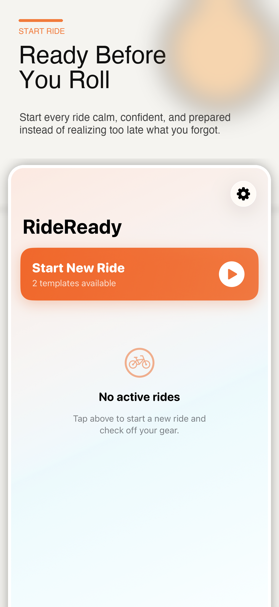
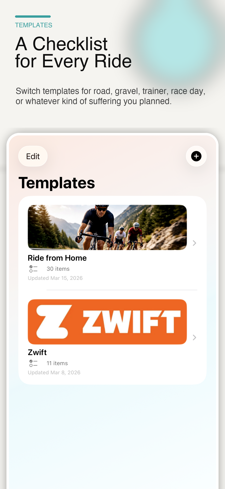
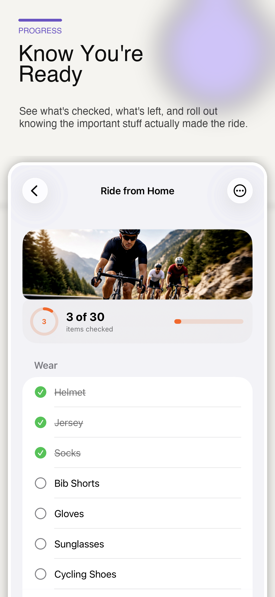
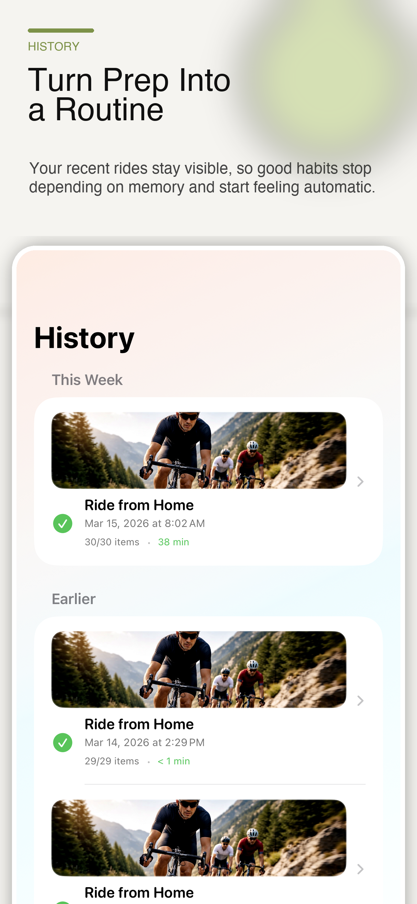
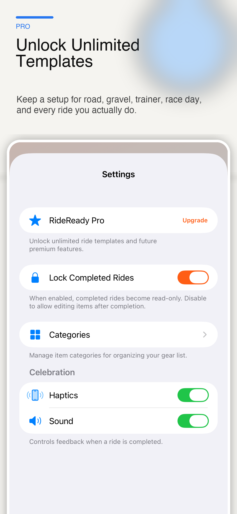

New in 2.0: Item Library and Wrap Up
Run through your ride setup in seconds, roll out knowing you are ready, then close the loop when you get home: charge, clean, dry, store, inspect, so the next ride starts ready too.
Free, with an optional one-time Pro upgrade. No subscription.

A light. A strap. Nutrition. Tools.
Or the light you never charged after the last ride. RideReady covers both ends of the ride, so nothing gets missed before you roll out, and nothing gets neglected when you get back.
The full circle
Run your ride setup checklist. Anything left over from last time, like a light that never got charged, shows up first, while there is still time to fix it.
RideReady remembers which gear you actually used, not just what you meant to pack.
After the ride, you get a short care list built from that gear: charge, clean, dry, store, inspect.
Work the list and everything is ready for the next ride. Skip something and it waits for you at the next prep, not in the middle of nowhere.
Built for cyclists
Build a setup for every kind of ride: road, gravel, trainer, race day, travel, or a quick spin from home. Build once, reuse every time. Setups are unlimited, free.
Work through your prep fast. The progress ring fills as you go, so you can see at a glance when you are ready to roll out.
Save each piece of gear once, with a photo or an icon, and the care it needs after a ride. Reuse it on every setup instead of retyping the same items forever.
When the ride ends, RideReady builds your post-ride care list from the gear you used. A minute of charging, washing, and putting things back, and nothing quietly goes flat, sour, or missing.
Your ride setups, gear library, and history sync privately through iCloud. Everything works offline too, and no account is required.
Unfinished care from your last ride surfaces during prep, while you can still do something about it. A soft warning, never a lockout. You can always proceed anyway.
Optional, and off by default. RideReady can notice when you are back near where your ride started and suggest opening Wrap Up. It stores no route, and you can turn it off at any time.
See it in action




Because ride prep is not just a list. It is a routine, before and after the ride.
Notes can hold a list. RideReady is built for the ride.
The free app includes unlimited ride setups, the full prep and Wrap Up workflow, and an Item Library for up to 3 active gear items. RideReady Pro is a one-time purchase that raises the gear library to unlimited and adds Return to Ready prompts.
Stop guessing, before the ride and after it. Download RideReady and close the loop on every ride.
Download for iPhone